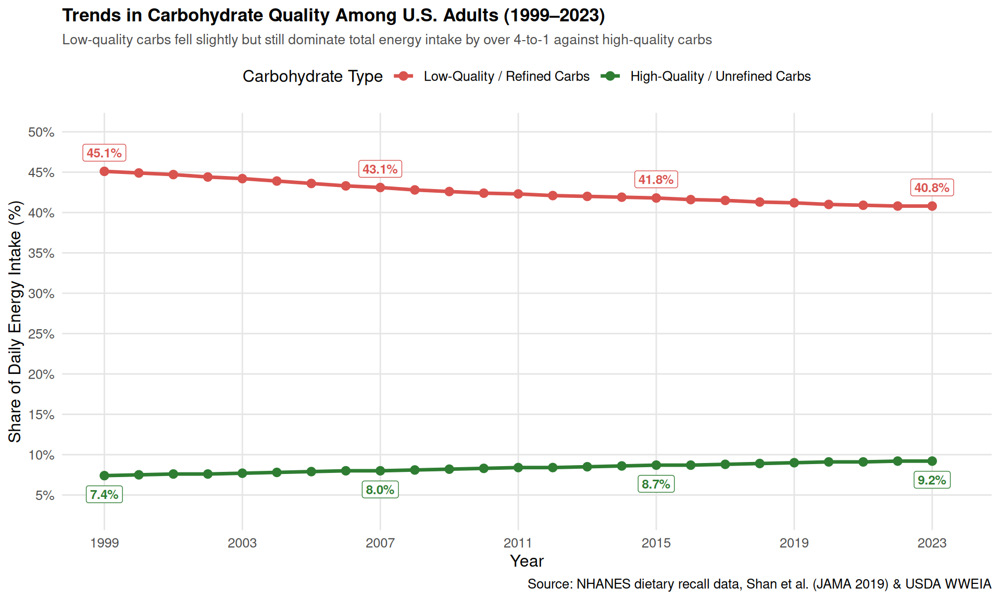

Carbs
Carbohydrate Quality: Refined vs. Unrefined (1999–2023)
In nutritional epidemiology, carbohydrates are evaluated by their quality:
- Low-Quality / Refined Carbohydrates: Refined grains (white bread, pasta, white rice), added sugars, fruit juices, and potatoes. These digest quickly and spike blood glucose and insulin.
- High-Quality / Unrefined Carbohydrates: Whole grains (oats, brown rice, whole wheat), whole fresh fruits, legumes, and non-starchy vegetables. These provide dietary fiber, micronutrients, and slow, sustained digestion.
The visualization below uses dietary recall data from NHANES and USDA dietary surveillance, tracking how adult carbohydrate intake shifted from 1999 to 2023 as a share of daily calories.
Refined carbohydrates have been processed to remove the fiber-rich bran and nutrient-dense germ, leaving only fast-digesting starch. This causes rapid surges in blood glucose and insulin.
Everyday Examples:
- Breads & Bakery: White sandwich bread, bagels, burger buns, croissants, flour tortillas, and pizza crust.
- Grains & Pasta: White rice, traditional pasta, couscous, and instant noodles.
- Snacks & Crackers: Pretzels, saltines, buttery snack crackers, and potato or corn chips.
- Breakfast Items: Sugary boxed cereals, toaster pastries, pancakes, and waffles made with white flour.
- Desserts & Sweets: Cookies, donuts, cakes, muffins, brownies, and pastries.
- Liquid & Added Sugars: Sodas, sweetened iced teas, fruit juice concentrates, candy, and syrups.
Unrefined carbohydrates are whole foods that keep their natural fiber, vitamins, and minerals intact. Their fiber slows digestion, supporting gut health, insulin sensitivity, and long-lasting energy.
Everyday Examples:
- Whole Grains: Steel-cut or rolled oats, brown rice, wild rice, quinoa, barley, farro, and 100% whole-wheat bread/pasta.
- Legumes & Beans: Lentils, black beans, chickpeas, kidney beans, pinto beans, and edamame.
- Root & Starchy Vegetables: Sweet potatoes, russet or gold potatoes (with skin), butternut squash, acorn squash, and corn.
- Whole Fruits: Apples, berries (blueberries, raspberries, blackberries), pears, and oranges (which provide fiber missing in juice).
- Seeds & Ancient Grains: Chia seeds, flaxseed, buckwheat, and amaranth.
Key Insights
- Persistent Imbalance: Even with a modest decline in added sugars, low-quality refined carbohydrates still account for over 40% of daily calories, whereas unrefined, high-quality carbohydrates make up under 9%.
- The Whole-Grain Deficit: Within high-quality carbohydrates, energy intake from whole grains rose from 2.0% to 2.7%, meaning that the overwhelming majority of grain foods consumed in the United States remain refined white flours.
- Implications for Metabolic Health: Because refined carbs digest quickly and produce elevated glycemic responses, their dominance in the American diet continues to drive insulin resistance and excess energy intake.
Health Effects of Refined Carbohydrates
While refined carbohydrates serve specific functional purposes, extensive epidemiological and clinical evidence demonstrates that high daily intake carries significant metabolic risks.
The Limited Benefits (“The Good”)
- Rapid Fuel for High-Intensity Exercise: Because they break down into glucose almost immediately, refined carbs are effective for quickly replenishing muscle glycogen during intense athletic training or treating acute low blood sugar (hypoglycemia).
- Enrichment & Extended Shelf Life: In the U.S., refined flours are fortified with essential micronutrients (iron, folic acid, and B vitamins), helping reduce deficiency diseases like neural tube defects, while offering affordable, shelf-stable staples.
The Metabolic Risks (“The Bad”)
- Blood Sugar Spikes & Insulin Resistance: Stripped of fiber, refined carbs trigger rapid surges in blood glucose. The pancreas must pump out large amounts of insulin to clear the sugar, which over time desensitizes cells and causes chronic insulin resistance.
- Elevated Risk of Type 2 Diabetes: Consistent consumption of high-glycemic-load foods puts prolonged stress on the endocrine system, directly correlating with higher rates of adult-onset diabetes.
- Rebound Hunger & Weight Gain: Without fiber or protein to slow gastric emptying, blood sugar drops quickly after a spike (“crash”), triggering rebound hunger, cravings, and involuntary caloric overconsumption.
- Dyslipidemia & Cardiovascular Strain: High refined carb diets accelerate fat production in the liver (de novo lipogenesis), driving up circulating triglycerides, lowering protective HDL cholesterol, and promoting artery-clogging small, dense LDL particles.
- Systemic Inflammation: Chronic post-meal glucose spikes increase oxidative stress and elevate inflammatory markers like C-reactive protein (CRP), which contributes to arterial and metabolic damage.